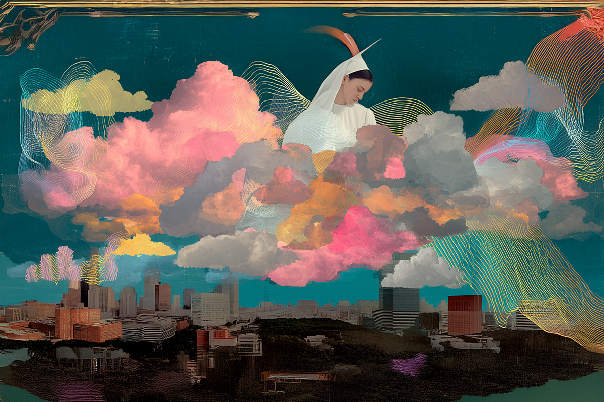
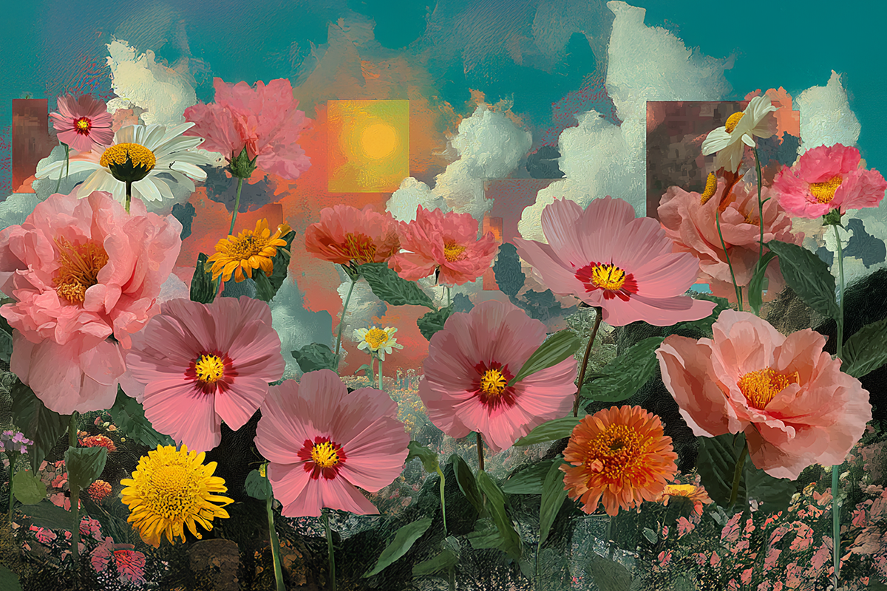
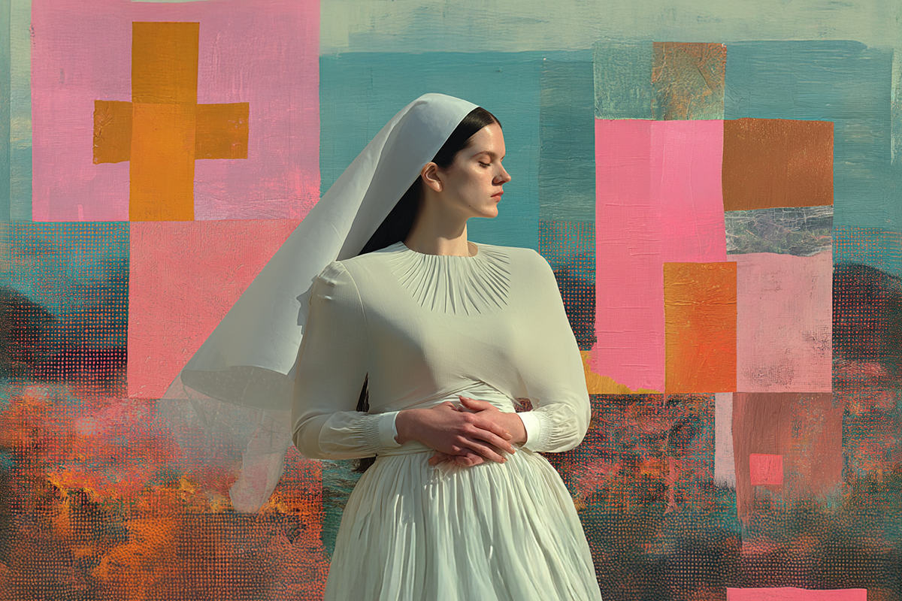
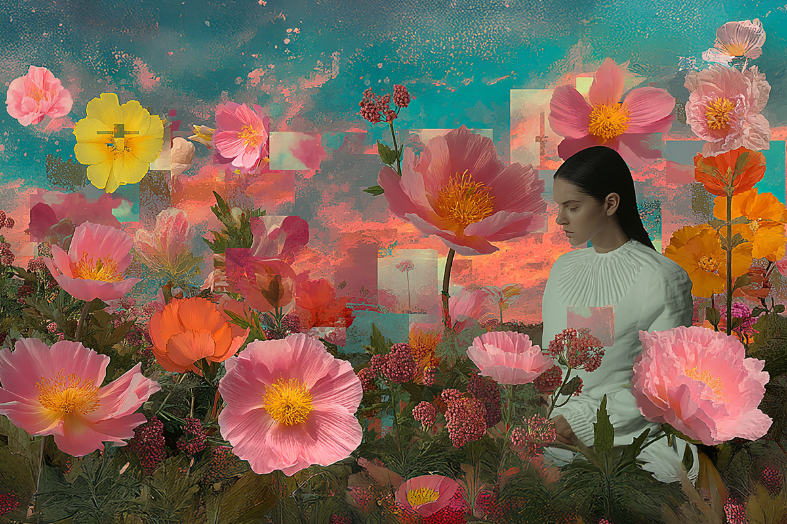

Rosalía y LUX: del dolor a la performance
Un desafío orquestal a los límites del pop y la industria
Un desafío orquestal a los límites del pop y la industria

Rosalía, la camaleónica cantante española que se ha hecho conocida por sus peculiares arreglos en su música y en su forma de cantar distintiva, ha vuelto al estudio después de tres años de ausencia.
LUX es el nombre de su nuevo álbum, el sucesor del aplaudido y controversial Motomami (2022), trabajo que le valió diversas nominaciones, varios galardones y muchas conversaciones entre los seguidores y no tan seguidores de su música. Es que muchos de los oyentes de la cantante levantaron la ceja ante una Rosalía que trabajó sobre las bases del reggaetón y el dance, géneros que siempre han generado opiniones divididas.
Si Motomami era un experimento “minimalista”, tal como ella lo describió en una reciente entrevista con Apple Music, LUX se abre como su reverso: un trabajo “maximalista”, expansivo, que oscila entre la luz y la oscuridad, donde lo sagrado y la cotidianidad de lo terrenal se rozan constantemente.
Ahora, después de una espera que se hizo eterna, ¿Qué sacamos en limpio de LUX, el nuevo álbum de estudio de Rosalía?

LUX se centra en un viaje estelar, un canto a lo divino. Rosalía pone sus lágrimas, su vulnerabilidad y la misma ambición musical que ha confesado querer dejar sobre la mesa ante las preguntas sobre este nuevo trabajo.
La naturaleza sacra en la musicalización y en la voz de la cantante se yuxtapone a las letras –que fueron sumamente trabajadas– las cuales muestran una simplicidad que emociona: pareciera que estamos frente a un 1 a 1 entre lo docto y una versión pulida de una corriente de conciencia. Es justamente esta disparidad lo que termina volviendo a LUX un trabajo humano, muy cercano, pero con una impronta musical tan grandilocuente que no puedes más que sentir junto a ella.
La música de Rosalía siempre ha buscado ser fiel a lo que la artista quiere expresar, y en el caso de ella, la voz y la música tienen la misma importancia. Eso lo hemos podido ver en todos sus trabajos, siendo los más relevantes El Mal Querer, Motomami y, ahora, LUX. Estos tres álbumes contemplan aristas diametralmente distintas de la intérprete, pero en todos se puede escuchar un cuidado absoluto en términos de producción y musicalización, donde hasta lo más simple termina sonando como una obra pulida hasta el hartazgo. Aunque, con LUX, esto último se aprecia aún más.

Rosalía ha sido bastante abierta al hablar de lo que quiere lograr con su música, pero también de cómo no se siente completa, que algo le falta, y eso lo ha vinculado a su relación con Dios, agregando la admiración que siente por aquellas mujeres que dedican su vida a la adoración divina. Yendo aún más lejos, la misma cantante, previo al lanzamiento de su disco, subía stories y publicaciones en sus redes sociales mientras presenciaba los coros de las iglesias.
Como se sabe, el canto a lo divino tiene una relación muy cercana a la música docta, por lo que, naturalmente, Rosalía terminó mezclando estas influencias, lo que dio como resultado una hibridación entre lo sacro y lo popular/folclórico del canto flamenco, estilo con el que la cantante se hizo inicialmente conocida.
Se entiende que la gran sorpresa tras lo que se venía con este álbum fue el lanzamiento del single “Berghain”, un track oscurísimo, con una producción apoteósica y que se realizó en conjunto con la Orquesta Sinfónica de Londres. Pero realmente uno de los grandes puntos a considerar es que también contó con la participación de la icónica Björk y del músico experimental Yves Tumor, cuya intervención fue notoria (a diferencia de muchas colaboraciones contemporáneas).
“Berghain” fue la canción perfecta para crear una expectación que ya se encontraba pululando entre los fans y que, con justa razón, dejó boquiabiertos a quienes dieron click en YouTube.

Los elogios de la crítica especializada y de aquellos impacientes por saber qué era lo que Rosalía cocinaba en el estudio han sido avasalladores.
De hecho, uno de los principales comentarios con el lanzamiento de “Berghain” fue que lo que se venía podría ser el álbum del 2025. Y solo bastó con la liberación de una canción.
Ahora, con el disco en nuestras manos, no cabe duda de que nos encontramos con un trabajo sumamente ambicioso, donde incluso Rosalía se atreve a incorporar más de una decena de idiomas, con la consistente interpretación de una orquesta que se planta con una energía maravillosa y en concordancia a lo que busca transmitir la cantante.
Es realmente fascinante que un disco de estas características haya sido esperado y recepcionado por un público que no se escapa del mainstream. Y no solo eso, que haya logrado llegar a la cima de las listas musicales más reconocidas en la actualidad.

Quizás lo de Rosalía, la espiritualidad inserta en la sonoridad e interpretación terminó siendo una fórmula que necesitábamos dentro de un universo musical que todavía se guía por patrones similares y que juega a seguro constantemente, sin tomar ningún tipo de riesgo. Y, bueno, Rosalía es la viva muestra de que ser constante, paciente, real a tus intereses musicales y tener la disposición de abrazar el miedo a equivocarse, puede ser el mejor camino a la realización personal y artística.
 Cultura
CulturaSé que suena raro hablar de calor extremo mientras en Chile todos están buscando la parka más gruesa del clóset.
 Cultura
CulturaEl hecho de que estemos entrando al mes de julio no se puede creer. Pero lo que tampoco se puede creer es la cantidad de artistas que han…
 Cultura
CulturaCuando hablamos de trabajos clásicos de la música chilena, siempre se nombran los discos de Violeta Parra, Víctor Jara, Los Jaivas o…